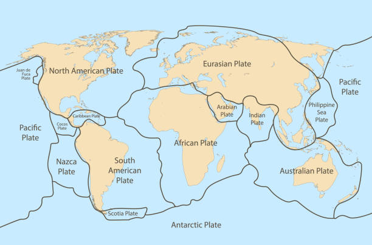
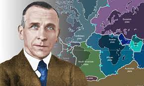

Introduction
The theory of plate tectonics states that the Earth’s solid outer crust, the lithosphere, is separated
into plates that move over the asthenosphere, the molten upper portion of the mantle. Oceanic and continental plates come together,
spread apart, and interact at boundaries all over the planet.


Wegener was a German meteorologist, geophysicist and polar researcher. In 1915 he published ‘The Origin of Continents and Oceans’, which outlined his theory of Continental Drift.

Pangea, also spelled Pangaea, in early geologic time, a supercontinent that incorporated almost all the landmasses on Earth.
There were a lot of clues that eventually led to the conclusion of the theory of plate tectonics. Here, we will be looking into
more of what those clues are.
Not everyone supported the theory of plate tectonics right away, there were skeptics to this idea. We will look more
at their arguments against it.